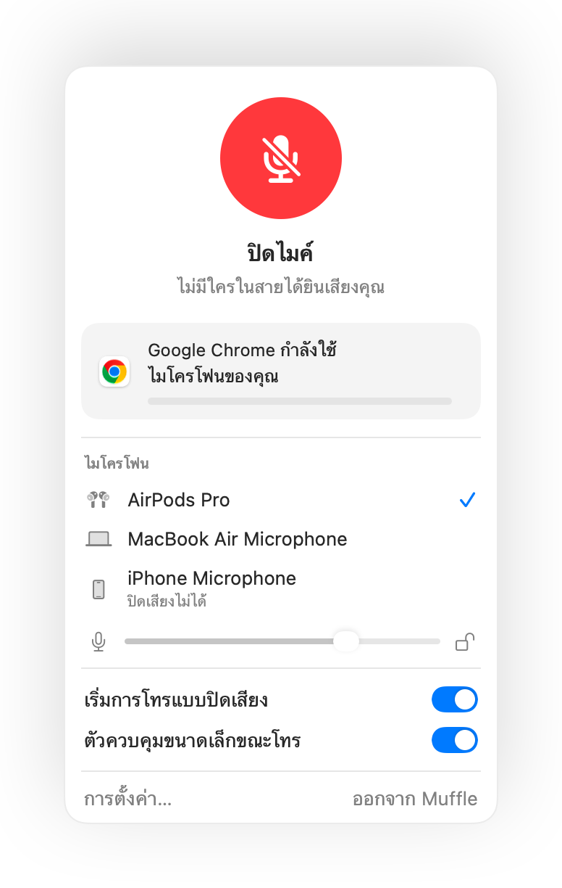

ฟังก์ชันกดเพื่อพูด Push to Talk บน Mac ในทุกแอป
ฟังก์ชันกดเพื่อพูดช่วยให้คุณปิดไมค์อยู่ตลอดเวลาจนกว่าจะกดปุ่มค้างไว้ เป็นวิธีที่ง่ายที่สุดในการตัดเสียงรบกวนในการประชุมใหญ่หรือห้องที่มีเสียงดัง แต่มีเพียงไม่กี่แอปที่รองรับ และแต่ละแอปก็ใช้ปุ่มที่แตกต่างกัน
Muffle เพิ่มระบบกดเพื่อพูดให้กับทุกแอปบน Mac ของคุณ คุณจะอยู่ในสถานะปิดเสียงตลอดเวลา เพียงกดปุ่มลัดค้างไว้เพื่อพูด แล้วปล่อยเพื่อปิดเสียงอีกครั้ง
ทดลองใช้ Muffle ฟรี 3 วันพบกันเร็วๆ นี้บน Mac App Store
วิธีใช้ฟังก์ชันกดเพื่อพูด
- ติดตั้ง Muffle
- ปิดเสียงด้วย Control-Option-M หรือ AirPods ของคุณ
- กด Control-Option-M ค้างไว้ขณะพูด
- ปล่อยมือ แล้วคุณจะกลับมาปิดเสียงอีกครั้ง

- การแตะปุ่มลัดสั้นๆ จะเป็นการสลับเปิดปิดเสียง ส่วนการกดค้างไว้จะเป็นการกดเพื่อพูด
- เลือกปุ่มที่กดสะดวกในการตั้งค่า Muffle เช่น ปุ่มตระกูล F
คำถามที่พบบ่อย
ฟังก์ชันกดเพื่อพูดใช้งานใน Google Meet ได้หรือไม่
ได้แน่นอน Muffle ปิดเสียงไมโครโฟนโดยตรง ดังนั้นฟังก์ชันกดเพื่อพูดจึงใช้งานได้ทั้งใน Meet, Zoom, Teams, Discord และแอปอื่นๆ ทั้งหมด
มีฟังก์ชันกดเพื่อปิดเสียงชั่วคราวหรือไม่
มี เมื่อคุณเปิดไมค์อยู่ การกดปุ่มลัดค้างไว้จะปิดเสียงของคุณไว้จนกว่าคุณจะปล่อยมือ